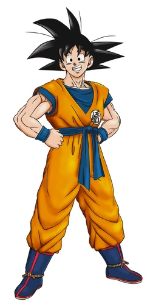
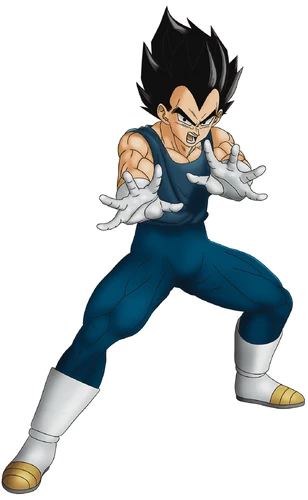
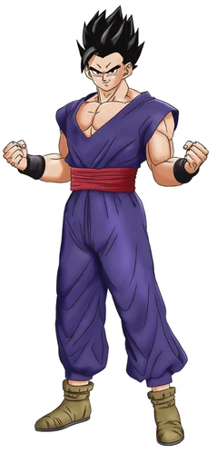
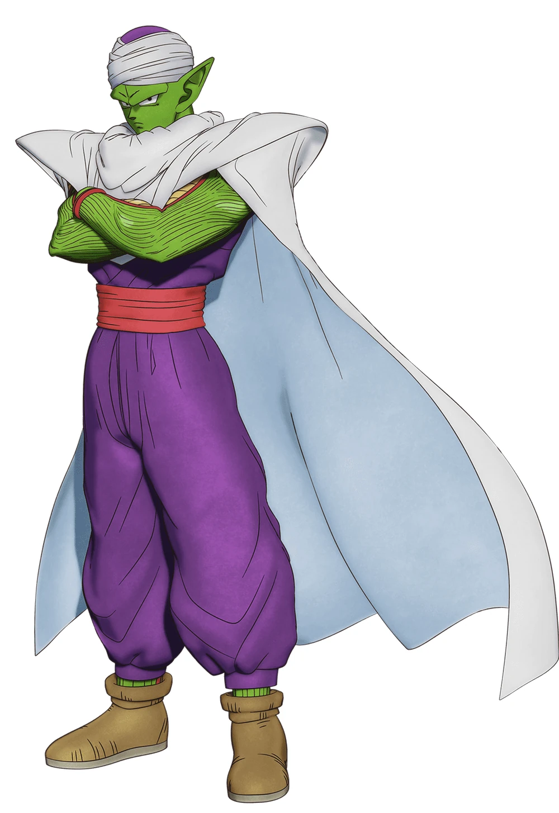
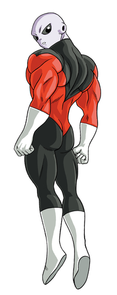
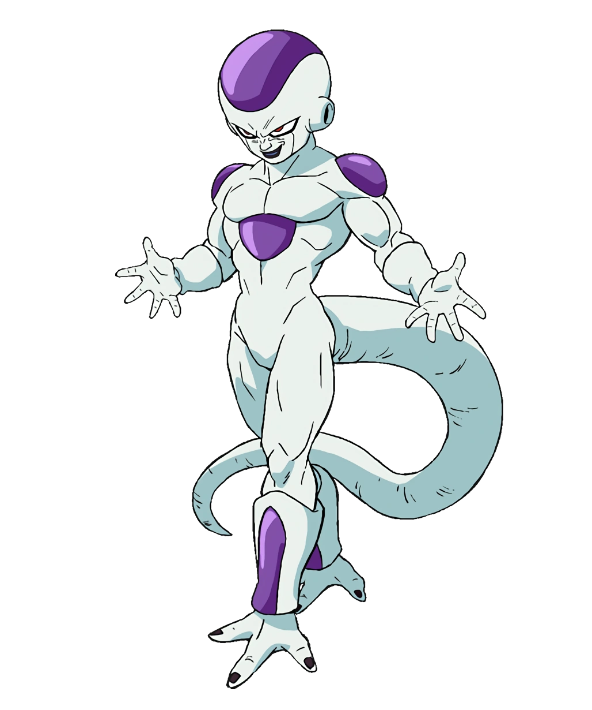

Goku (孫そん悟ご空くう Son Gokū, Japanese pronunciation: [sõŋgokɯː]), born Kakarot (カカロット Kakarotto, Japanese pronunciation: [kakaɾot̚to]), is a Saiyan raised on Earth and the main protagonist of the Dragon Ball series. He is the second child and youngest son of Bardock and Gine, the husband of Chi-Chi, and the father of Gohan and Goten. Originally sent to Earth by his parents as an infant, Kakarot was adopted by Grandpa Gohan and renamed Son Goku. A head injury at an early age altered Goku's memory, ridding him of his initial destructive nature and allowing him to grow up to become one of Earth's greatest defenders. Goku constantly strives and trains to be the greatest warrior possible, which has kept the Earth and the universe safe from destruction multiple times.
Vegeta (ベジータ Bejīta), more specifically Vegeta IV (ベジータ四世 Bejīta Yonsei), recognized as Prince Vegeta (ベジータ王子 Bejīta Ōji), is the prince of the fallen Saiyan race and the husband of Bulma, the father of Trunks and Bulla, the eldest son of King Vegeta, as well as one of the main characters of the Dragon Ball series. Regal, egotistical, and full of pride, Vegeta was once a ruthless, cold-blooded warrior and outright killer, but later abandoned his position in the Frieza Force for a peaceful life on Earth. He would repeatedly fight alongside Universe 7's most powerful warriors in order to protect Earth and his family, as well as to surpass Goku in power. Vegeta's strong character development has received high praise and is regarded as the biggest in the series. He initially debuted as the main antagonist of the Vegeta Saga but progressed into a more anti-heroic tritagonist role for the rest of Dragon Ball Z. Since the Majin Buu Saga and going into Dragon Ball Super, Vegeta has been the main deuteragonist/secondary protagonist behind Goku.
Son Gohan (孫そん悟ご飯はん Son Gohan, Japanese pronunciation: [sõŋgohãɴ]) is a half-breed Saiyan and one of the most prominent characters in the Dragon Ball series. He is the elder son of the series' primary protagonist Goku and his wife Chi-Chi, the older brother of Goten, the husband of Videl and father to Pan. He is named after Goku's adoptive grandfather, Gohan. Unlike his father, Gohan is a brilliant scholar and lacks a passion for fighting, preferring to do so only when his loved ones are threatened. Nevertheless, he spends much of his life participating in the defense of Earth, often helping to turn the tides when the dormant depths of his power are unleashed. Gohan resembles his father, inheriting Goku's hair, facial features, and dark eyes. At the same time, he has his mother's light peach complexion rather than his father's light tan. Also taking after his father, Gohan inherited a Saiyan tail, which was long and prehensile with brown fur. It was removed and regrew a few times during his childhood until removed permanently by Vegeta in their first battle.
Piccolo Jr. (ピッコロ・ジュニア Pikkoro Junia, lit. "Piccolo Junior"), usually just called Piccolo and also known as Ma Junior (マジュニア Ma Junia), is a Namekian and also the final child and reincarnation of King Piccolo, later becoming the reunification of the Nameless Namekian after fusing with Kami, at which point he was once referred to as Kamiccolo by Goku. According to Grand Elder Guru, Piccolo, along with Kami and King Piccolo, are part of the Dragon Clan, who were the original creators of the Dragon Balls. A wise and cunning warrior, he was the main antagonist in the final saga of Dragon Ball, the Piccolo Jr. Saga, and was thus a ruthless enemy of Goku. However, starting with the first saga of Dragon Ball Z, the Raditz Saga, he began to lose all villainous traits, and when he started training Goku's son Gohan during the Vegeta Saga which led to the two developing a strong bond with each other, he became a permanent member of the Dragon Team and eventually one of Earth's greatest heroes.
Jiren (ジレン Jiren), also known as Jiren the Gray (灰色のジレン Haiiro no Jiren), is the most powerful member of the Pride Troopers. He served as the main fighting antagonist in the Universe Survival Saga and as a major contestant in the Tournament of Power. An extraordinary powerful being, Jiren is considered to be one of the strongest mortals in all of the multiverse, outclassing even his Universe's God of Destruction. He is a quiet and honorable fighter, who believes in strength and justice. He previously did not trust anyone and never considered teamwork at all during battle, opting to fight enemies alone, and single-handedly almost always winning.
Frieza (フリーザ Furīza, lit. "Freeza") is the main antagonist of the Dragon Ball series. He is the descendant of Chilled, the youngest son of King Cold, the younger brother of Cooler and the father of Kuriza. After inheriting Cold's imperialist army and rising to power as the emperor of Universe 7 at a young age, Frieza quickly established himself as a ruthless tyrant, feared across the universe for his unparalleled cruelty and power. Ever since his invasion of Namek, Frieza has been the series' most recurring villain, clashing with his archnemesis Goku and his allies on several occasions, becoming even more powerful every time.
